La libre circulation du savoir
portrait de la communauté des Logiciels Libres
par Guillaume Pratte & Ignace Mouzannar
À tour de rôle...
Présentons-nous!
Logiciels Libres?
UNIX?
Open Source?
GNU/Linux?
*BSD?
Rings a bell?
Le code source
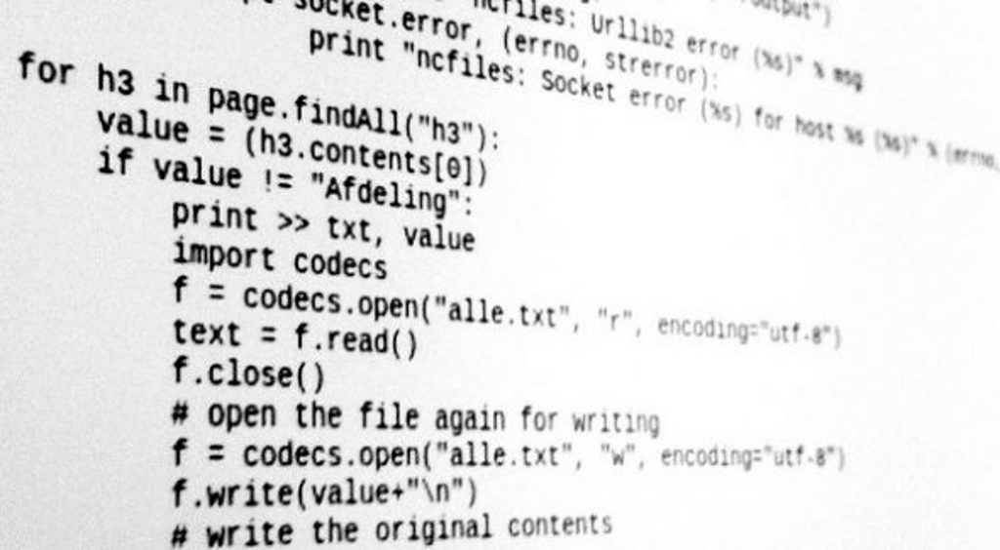
Les 4 libertés essentielles
Un peu d'histoire contemporaine...
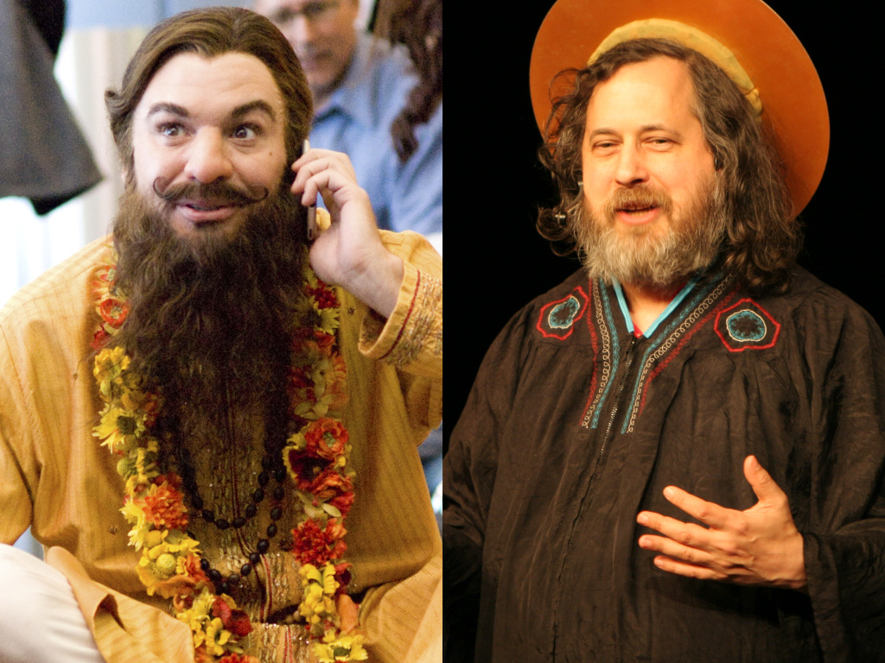
Richard M. Stallman
Linus Torvalds
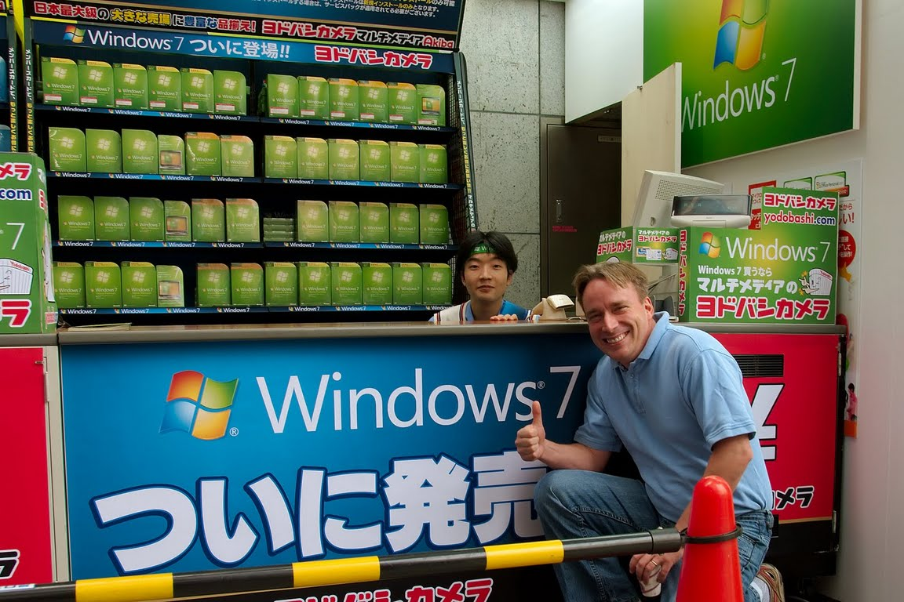
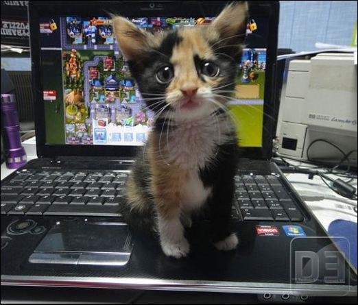
À quoi vous sert votre ordinateur?
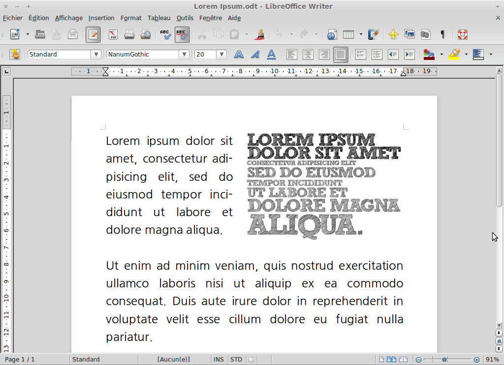
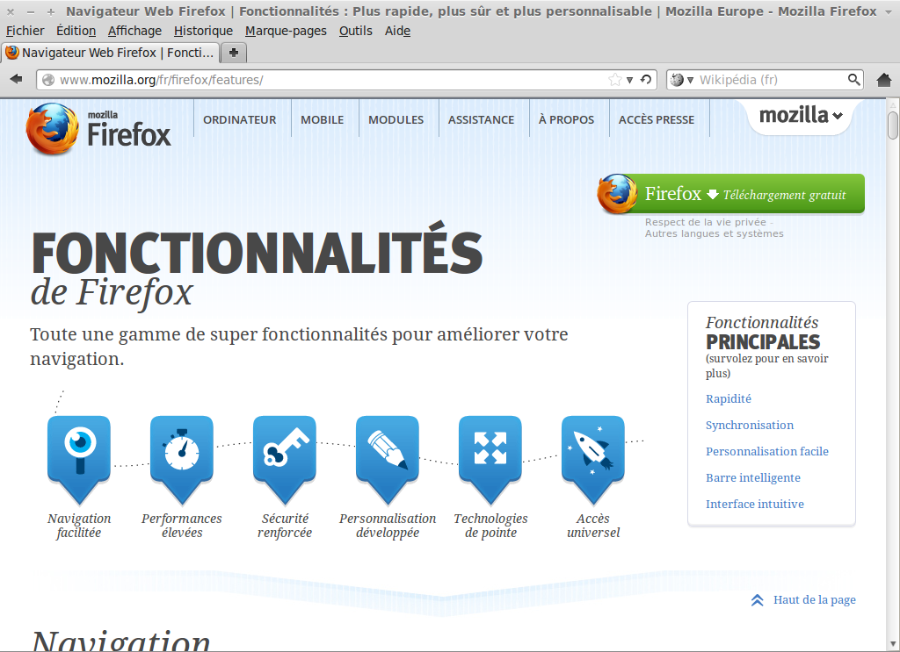
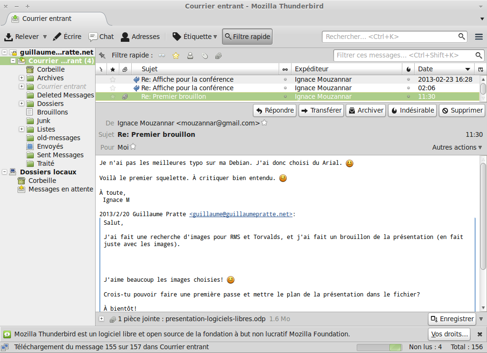
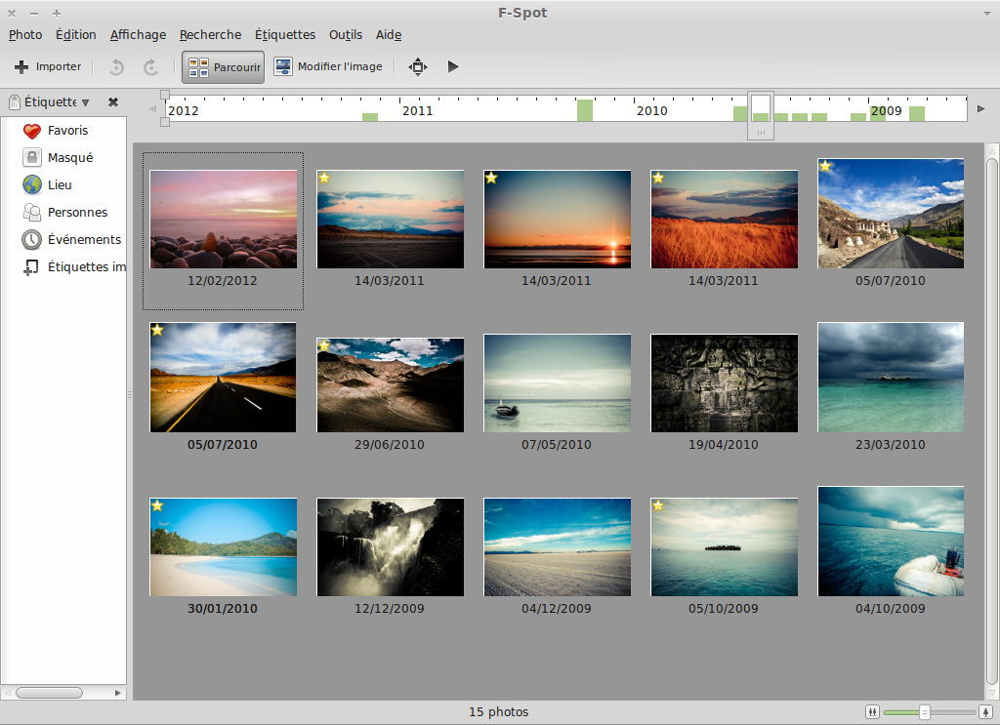
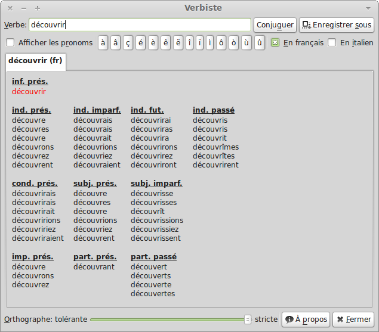
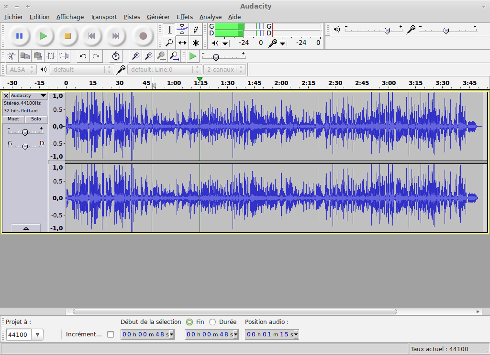
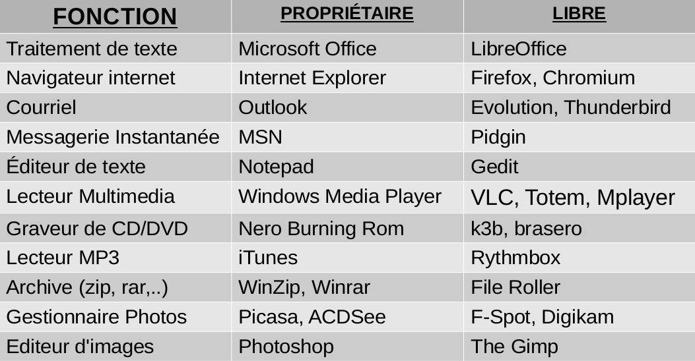
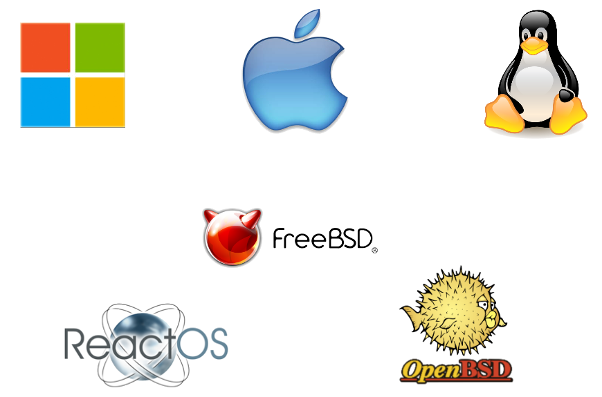
Trouver l'intrus..
- Mon ordinateur est lent en ce moment...
- Tu as certainement un virus,
Le plus facile est de formatter...
STOP!
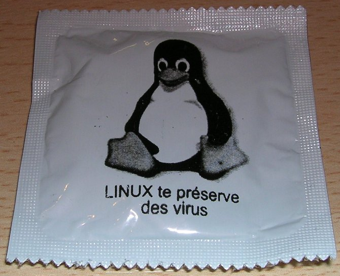
Pause? :)
Les distributions GNU/Linux
Qu'est-ce qu'une distribution?
Il y en a beaucoup?
Laquelle choisir?
Un exemple : Linux Mint
Video: How Linux is made
par Linux Foundation
Quelles sont les valeurs du
Logiciel Libre?
La communauté
Développeurs
Multitude
Listes de distribution
Contribuer
Traductions
Publique
Questions?
Sources de la présentation: